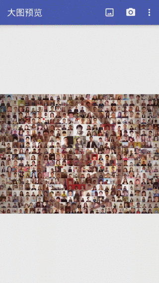
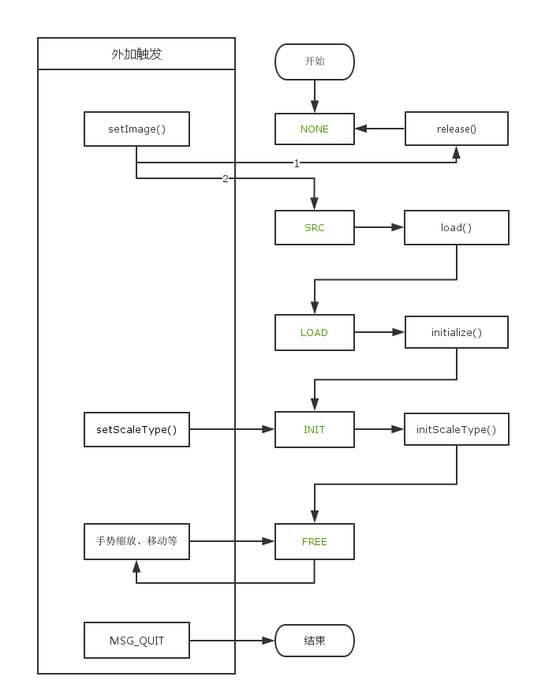

简介
这个项目是一个用于Android预览大图片的图片显示库，可实现原始图片高清显示，专门针对大图片做了很多优化，可以顺畅显示，缩放10多兆的高清图片。效果如下：

相关技术概述
图片分块加载
图片的分块加载在地图绘制的情况上最为明显，当想获取一张尺寸很大的图片的某一小块区域时，就用到了图片的分块加载，在Android中BitmapRegionDecoder类的功能就是加载一张图片的指定区域。BitmapRegionDecoder类的使用非常简单，API很少并且一目了然，如下：1
2
3
4
5
6
7
8
9
10
11
12
13
14
15
16// 创建实例
mDecoder = BitmapRegionDecoder.newInstance(mFile.getAbsolutePath(), false);
// 获取原图片宽高
mDecoder.getWidth();
mDecoder.getHeight();
// 加载(10, 10) - (80, 80) 区域内原始精度的Bitmap对象
Rect rect = new Rect(10, 10, 80, 80);
BitmapFactory.Options options = new BitmapFactory.Options();
options.inSampleSize = 1;
Bitmap bitmap = mDecoder.decodeRegion(rect, options);
// 回收释放Native层内存
mDecoder.recycle();
LruCache
LruCache使用时一般需要继承其，并重写其一些方法，如sizeOf(),entryRemoved()等。其还提供了一个放create()用于get()获取不到时自动创建，更加需要可实现其。
其中sizeOf()用于处理获取缓存对象的大小，比如缓存Bitmap对象时，可以使用Bitmap的字节数作为Bitmap大小的表示，值得注意的一点是，LruCache不能换成大小会变的对象，sizeOf()对同一个对象始终要返回相同的值，如果非要换成会变动的对象，那么可以让其返回固定值，如下：1
2
3
4@Override
protected int sizeOf(Point key, Bitmap value) {
return value.getRowBytes() * value.getHeight();
}
`entryRemoved()`也是一个比较重要的方法，用于回收某个对象时调用，这样当回收Bitmap对象时可以调用Bitmap对象的`recycle()`方法主动释放Bitmap对象的内存。
`create()`方法是当`get()`获取不到对象时调用，默认实现返回`null`，根据需要可重写其。
手势处理
主要用到两个手势处理类，分别是ScaleGestureDetector和GestureDetector，前者用于处理缩放手势，后者用于处理其余手势，如移动，快速滑动，点击，双击，长按等。
ScaleGestureDetector专门处理缩放手势，其比较重要的方法是onScale(ScaleGestureDetector detector)，当缩放时会不停地回调这个方法，需要注意的一点是detector.getScaleFactor()获取到的缩放比例是相对上一次的，不如放大时一般这个值会是1.1, 1.2, 1.1, ....。1
2
3
4
5
6@Override
public boolean onScale(ScaleGestureDetector detector) {
mIntensifyView.addScale(detector.getScaleFactor(),
detector.getFocusX(), detector.getFocusY());
return true;
}
加载流程

NONE（无状态）
初始的状态，这个时候的View还没有设置图片资源，NONE状态不会自动转变到其他状态，只有外界设置了图片资源后才会进行下面的状态的转移。SRC（锁定资源）
当外界设置了图片资源后，View便具有了图片源，这是就到了SRC状态。LOAD（加载宽高）
到达LOAD状态前，需要加载图片的真实宽高，真实宽高加载完成后就到了LOAD状态，LOAD状态还没有真正加载图片，这是有必要的，如界面不可见，图片不可见时是不需要加载图片的，这里是有待优化的地方。INIT（初始化整图）
INIT状态会去根据View的显示区域加载一张完整的图片，精度会根据图片和显示区域的尺寸比例计算出一个比较合适的值，如果图片很大，精度就会比较低，如果图片比较小，精度就很高，这张图片是作为底图使用。FREE（ScaleType完成）
图片显示都会有一个ScaleType，目前只有两种，FIT_CENTER，FIT_AUTO，前者和ImageView的一样，后者的显示方式可以参考微博图片，微信图片的显示方式，对于长图会比较明显，只有这一步做完了才能真正的去显示图片，也就是FREE状态才是用于显示图片的。图片的缩放，移动，快速移动等操作都是在这个状态上做的。
内存缓存
LruCache增强
Android中的LruCache的使用和前面介绍的完全一致，这里使用的时候做了一些处理，实现了一个新的LruCache名为IntensifyCache，比如实现了create()，在获取Bitmap时，如果不存在就加载等，并且添加了两个方法，一个是justGet()用于仅仅获取，不会自动触发create()方法，前面说过get()方法在获取不到时会触发create()方法去创建。另一个方法是alternative()用于提供备选方法，就是在get()获取不到时先不创建，而是先去查找已有的其他缓存是否有可代替的，如果可以找到，那么就返回这个，否则继续走create()方案，这里的设计是针对Bitmap缓存做的，不一定适合其他的缓存。
上面介绍了两个增加的方法的大概功能，现在介绍下IntensifyImageCache是如何缓存Bitmap的，首先IntensifyImageCache类有个内部类ImageCache是根据Point缓存Bitmap的缓存类，这个类也是继承IntensifyCache的。此类的两个比较重要的方法实现如下：1
2
3
4
5
6
7
8
9
10@Override
protected Bitmap create(Point key) {
BitmapFactory.Options options = new BitmapFactory.Options();
options.inSampleSize = level;
Rect rect = blockRect(key.x, key.y, BLOCK_SIZE);
if (rect.intersect(mOriginalRect)) {
return mRegionDecoder.decodeRegion(rect, options);
}
return null;
}create方法，此方法是指定的点获取对应的Bitmap对象，这里所说的点并不是像素点，而是将图片按照某个尺寸划分出来的方格的坐标，后面会有详细点的说明。这里其实不难明白，其实就是加载指定坐标对应的Bitmap对象，level就是精度。只用与图片原始区域有交集时才会加载并返回对应的Bitmap对象。另外一个方法是
alternative，此方法是提供备选，当获取某精度下的某坐标的Bitmap对象时发现没有，这时会优先去寻找更高精度的对应位置的缓存，一旦发现会直接返回并使用其。代码如下：1
2
3
4
5
6
7
8
9
10
11
12
13
14
15
16@Override
protected Bitmap alternative(Point key, Integer level) {
if (!this.level.equals(level)) {
Bitmap bitmap = justGet(key);
if (bitmap != null) {
return bitmap;
}
}
if (level > 1) {
ImageCache imageCache = IntensifyImageCache.this.justGet(level >> 1);
if (imageCache != null) {
return imageCache.alternative(key, level >> 1);
}
}
return null;
}
这些都是ImageCache做的事情，那么IntensifyImageCache做了什么呢？IntensifyImageCache是按照精度，缓存了不同的ImageCache，它的键值是精度，值是ImageCache，按照最开始说的，其sizeOf()方法要使用固定返回值，这里使用的是默认值1。并不为其做备选策略。
图片表示
这个过程摸索了很久，最后确定用一个RectF对象，始终表示着真正的图片的边界，需要计算显示的就是与可视区域的交集部分，每次当缩放，滑动等操作时都会去计算并修改RectF对象，之所以使用RectF而不使用Rect想必大家都明白，RectF是浮点型，表示的更加精确，防止图像会有细微的跳跃感。如此一来我的滑动等操作，都可以使用系统提供的ScrollBy等，Fling也会更加简单，显示区域的真正区域是完全分开的，显示时只需计算交集即可，另外也无需关心原点在哪里。